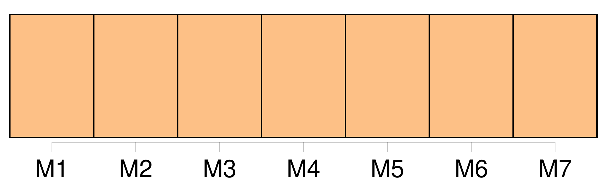

Longueur nb maillons : 35 mentions |
  |
— [On] n'écrase pas le monde, dit -elle, en sautant à terre. [121 phrases] Au milieu de la chaussée, de grands profils grisâtres de tombereaux barraient la rue ; et, d'un bout à l'autre, un souffle qui passait faisait deviner une file de bêtes attelées qu' [on] ne voyait point. Des appels, le bruit d'une pièce de bois ou d'une chaîne de fer tombant sur le pavé, l'éboulement sourd d'une charretée de légumes, le dernier ébranlement d'une voiture butant contre la bordure d'un trottoir, mettaient dans l'air encore endormi le murmure doux de quelque retentissant et formidable réveil, dont [on] sentait l'approche, au fond de toute cette ombre frémissante. [23 phrases] [On] dit qu' [on] bâtira encore deux pavillons, en démolissant les maisons, autour de la Halle au blé. [3 phrases]
Et cette grande rue, celle qui est devant nous, comment la nomme-t [-on] ? [28 phrases] Et Florent se rappelait qu' [on] avait manqué le fusiller là, contre le mur de Saint-Eustache. [3 phrases] [On] le conduisit à un poste voisin, en laissant au chef du poste cette ligne écrite au crayon sur un chiffon de papier : « Pris les mains couvertes de sang. [3 phrases] [On] lui avait mis les menottes, [on] le gardait comme un fou furieux. [3 phrases] Ils se trouvaient une centaine, parqués au fond de cette cave, sans air, dévorant les quelques bouchées de pain qu' [on] leur jetait, ainsi qu'à des bêtes enfermées. Lorsqu'il parut devant un juge d'instruction, sans témoins d'aucune sorte, sans défenseur, il fut accusé de faire partie d'une société secrète ; et, comme il jurait que ce n'était pas vrai, le juge tira de [son] dossier le chiffon de papier : « Pris les mains couvertes de sang. [2 phrases] [On] le condamna à la déportation. [4 phrases] » De Paris au Havre, les prisonniers n'eurent pas une bouchée de pain, pas un verre d'eau ; [on] avait oublié de leur distribuer des rations avant le départ.
Ils ne mangèrent que trente-six heures plus tard, quand [on] les eut entassés dans la cale de la frégate le Canada. [12 phrases]
Si l' [on] y avait quelques parents, au moins! [10 phrases] Enfin, c'est heureux quand [on] sait où descendre. [1 phrases]
Et c'est une joie quand [on] revient, n'est -ce pas? [8 phrases] Tout le long de la rue du Pont-Neuf, [on] déchargeait, les tombereaux acculés aux ruisseaux, les chevaux immobiles et serrés, rangés comme dans une foire. Florent s'intéressa à une énorme voiture de boueux, pleine de choux superbes, qu' [on] avait eu grand'peine à faire reculer jusqu'au trottoir ; la charge dépassait un grand diable de bec de gaz planté à côté, éclairant en plein l'entassement des larges feuilles, qui se rabattaient comme des pans de velours gros vert, découpé et gaufré. [7 phrases] [On] ne voyait encore, dans la clarté brusque et tournante des lanternes, que l'épanouissement charnu d'un paquet d'artichauts, les verts délicats des salades, le corail rose des carottes, l'ivoire mat des navets ; et ces éclairs de couleurs intenses filaient le long des tas, avec les lanternes. [3 phrases] » [On] venait d'ouvrir les grilles du pavillon aux gros légumes ; les revendeuses de ce pavillon, en bonnets blancs, avec un fichu noué sur leur caraco noir, et les jupes relevées par des épingles pour ne pas se salir, faisaient leur provision du jour, chargeaient de leurs achats les grandes hottes des porteurs posées à terre. [2 phrases] Derrière lui, sur le carreau de la rue Rambuteau, [on] vendait des fruits. [13 phrases] Elle paya, elle emporta les deux paniers dans le pavillon aux fruits qu' [on] venait d'ouvrir. [90 phrases] C'était un marchand d'herbes cuites ; au fond, des bassines luisaient ; sur la table d'étalage, des pâtés d'épinards et de chicorée, dans des terrines, s'arrondissaient, se terminaient en pointe, coupés, derrière, par de petites pelles, dont [on] ne voyait que le manche de métal blanc. [37 phrases] Il y avait, près des théières, dans une corbeille, des petits pains au beurre qu' [on] venait d'apporter et qui fumaient. [53 phrases] Mais Baratte était bien tombé ; tout le carnaval de l'ancien marché des Innocents se trouvait enterré, à cette heure ; [on] en était aux Halles centrales, à ce colosse de fonte, à cette ville nouvelle, si originale. [4 phrases]
[On] devait flanquer les vieilles cambuses par terre et faire du moderne. [1 phrases]
N'est -ce pas un tableau tout fait, et qui serait plus humain que [leurs] sacrées peintures poitrinaires? [10 phrases]
… [On] trouve toujours quelqu'un pour [vous] payer à boire, [on] ne rencontre jamais personne qui [vous] paye à manger. [20 phrases] Le long du carreau de la triperie, [on] eût dit des champs de thym, de lavande, d'ail, d'échalote ; et les marchandes avaient enlacé, autour des jeunes platanes du trottoir, de hautes branches de laurier qui faisaient des trophées de verdure. [28 phrases] [On] déchargeait toujours ; des tombereaux jetaient leur charge à terre, comme une charge de pavés, ajoutant un flot aux autres flots, qui venaient maintenant battre le trottoir opposé. |

|
La ressource peut être téléchargée sur la page Ortolang
Si vous avez des questions ou vous voyez des erreurs, merci d'envoyer un mail à silvia.federzoni89@gmail.com
Site développé par S. Federzoni (contact)